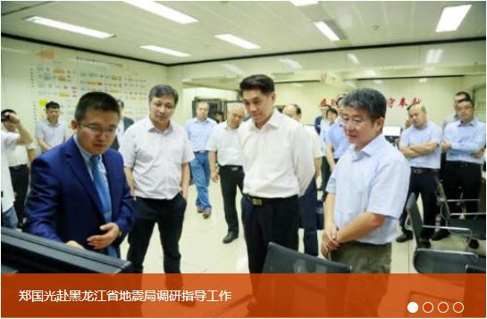

2017-09
08
习近平：高举中国特色社会主义伟大旗帜为决胜全面小康社会实现中国梦而奋斗[2017-09-08]
习近平：朝着全面深改总目标聚焦发展[2017-09-08]
推进美丽中国建设--党的十八大以来生态文明建设成就综述[2017-09-08]
彰显领导核心作用--党的十八大以来全面加强党建成就综述[2017-09-08]
巩固长久治安之基--党的十八大以来全面推进依法治国成就综述[2017-09-08]
为筑梦中国提供不竭动力--党的十八大以来全面深化改革述评[2017-09-08]